1 简介
| (require plot) | package: plot-gui-lib |
1.1 绘制二维图形
要绘制一个单输入、实值的函数,可以这样做
> (require plot) > (plot (function sin (- pi) pi #:label "y = sin(x)")) 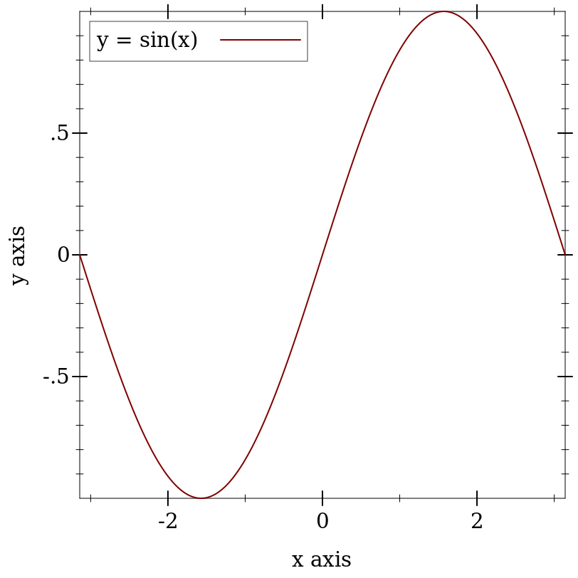
function 的第一个参数是要绘制的函数, #:label 参数成为图例中的函数名称。
(require plot) (plot-new-window? #t)
1.2 术语
在上面的例子中, (- pi) 和 pi 定义了 x 轴的 bounds, 即绘制 sin 函数的封闭区间。 function 函数自动确定 y 轴的边界为 [-1,1] 。
function 构建了一个 renderer, 它负责实际绘制工作。 渲染器也会产生图例条目,要求绘制的边界,并要求轴的刻度和刻度标签。
plot 函数收集图例条目、边界和刻度线。 然后,它设置一个 plot area ,该区域有足够大的边界来容纳呈现器, 绘制坐标轴和刻度线,调用呈现器的绘制程序,然后绘制图例。
1.3 绘制三维图形
要将一个双输入的实值函数绘制成一个曲面,可以尝试如下方法
文档中无法显示,但在 DrRacket 中,你可以通过点击三维图形并拖动鼠标来旋转它们。试试吧!
> (plot3d (surface3d (λ (x y) (* (cos x) (sin y))) (- pi) pi (- pi) pi) #:title "An R × R → R function" #:x-label "x" #:y-label "y" #:z-label "cos(x) sin(y)") 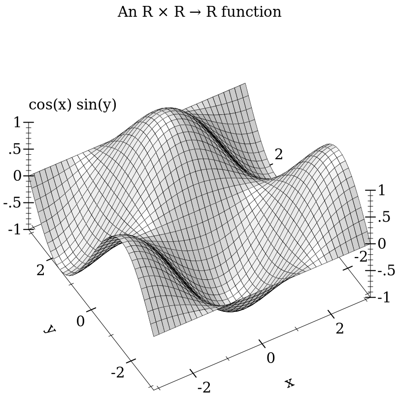
这个例子还演示了使用改变绘图的关键字参数,如 #:title. 在 Plot 中,每个关键字参数都是可选的,而且几乎都有参数化的默认值。 就 plot3d 的 #:title 而言,相应的参数是 plot-title 。 也就是说,关键字参数通常是对绘图或渲染器进行参数化的快捷方式:
当对一个以上的绘图进行参数化时,通常更容易全局设置参数, 如 (plot-title "Untitled") 和 (plot3d-angle 45) 。
有许多参数并不对应于关键字参数,例如 plot-font-size 。 完整的清单请参见 图形和渲染器参数 。
> (parameterize ([plot-title "An R × R → R function"] [plot-x-label "x"] [plot-y-label "y"] [plot-z-label "cos(x) sin(y)"]) (plot3d (contour-intervals3d (λ (x y) (* (cos x) (sin y))) (- pi) pi (- pi) pi))) 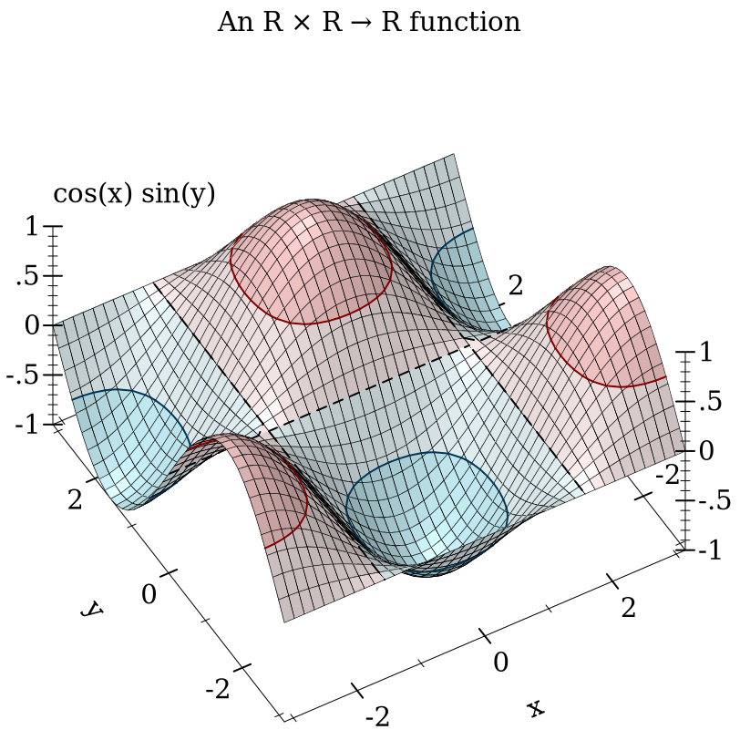
这个例子还演示了 contour-intervals3d, 它为等高线或恒定高度的线之间的表面着色。 默认情况下, contour-intervals3d 将等高线放在与 z 轴上的刻度线相同的高度。
1.4 绘制多个二维渲染器
渲染器可以通过在一个列表中传递它们来一起绘制:
> (plot (list (axes) (function sqr -2 2) (function (λ (x) x) #:color 0 #:style 'dot) (inverse sqr -2 2 #:color 3))) 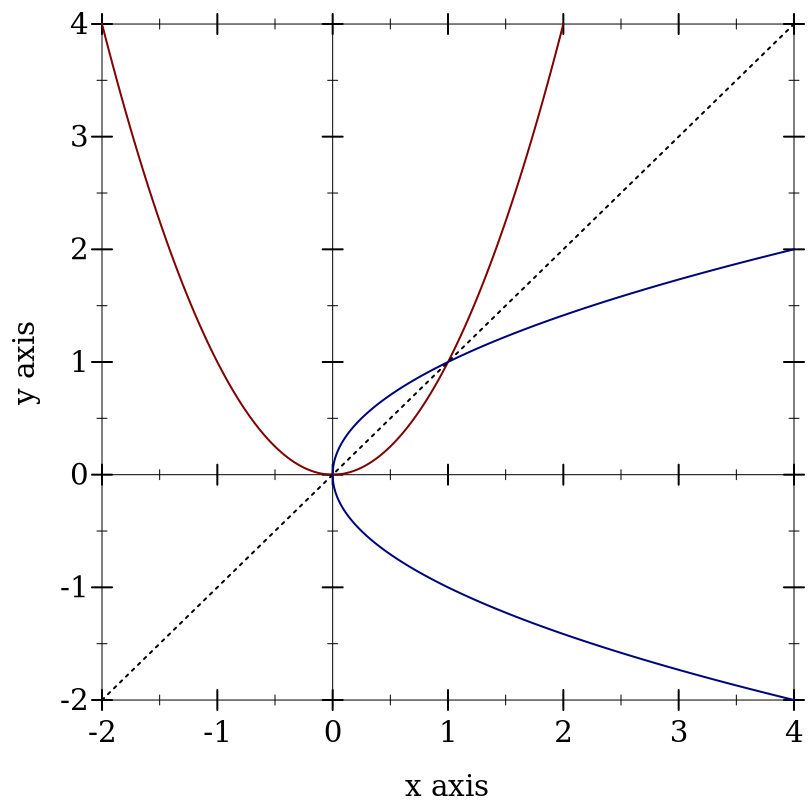
这里, inverse 绘制的是一个函数的逆坐标。 ( function 和 inverse 都绘制了反射线 (λ (x) x) ,两者完全相同。)
请注意这些编号的颜色。 Plot 还可以将 RGB 值的列表识别为颜色,如 '(128 128 0), color% 实例,以及 "red" 和 "navajowhite" 等字符串。 (最后一个是使用 color-database<%> 转化为 RGB 三要素)。 当你只需要具有良好对比度的不同颜色,但并不特别关心它们是什么时,可以使用编号的颜色。
axes 函数返回一个包含两个渲染器的列表,每个轴都有一个。 这个列表以列表的形式传递给 plot, 这意味着 plot 接受渲染器 列表的列表 。 一般来说, plot 和 plot3d 都接受 treeof 渲染器。
渲染器在传递 #:label 参数时产生图例条目。举例来说、
> (plot (list (axes) (function sqr -2 2 #:label "y = x^2") (function (λ (x) x) #:label "y = x" #:color 0 #:style 'dot) (inverse sqr -2 2 #:label "x = y^2" #:color 3))) 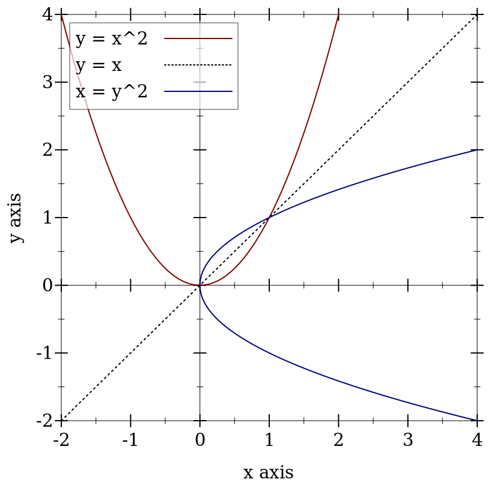
渲染器的列表被 flatten ,然后按 in order 绘制。 在区间图中,这个顺序更为明显:
> (plot (list (function-interval (λ (x) (- (sin x) 3)) (λ (x) (+ (sin x) 3))) (function-interval (λ (x) (- (sqr x))) sqr #:color 4 #:line1-color 4 #:line2-color 4)) #:x-min (- pi) #:x-max pi) 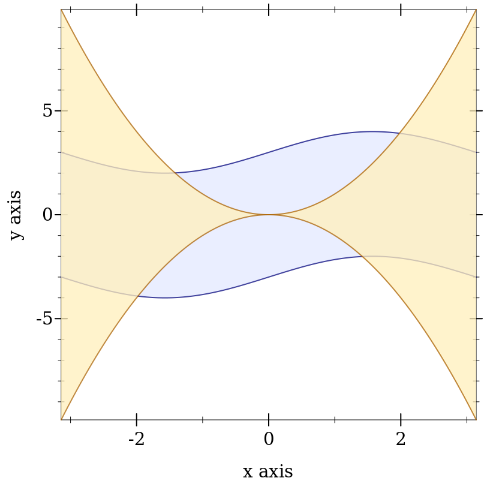
很明显,正弦波之间的蓝色区间首先被绘制出来。
1.5 渲染器与绘图的界限
在前面的例子中, x 轴的 bounds 是用关键字参数 #:x-min 和 x-max 传递给 plot 。 这些边界可以很容易地在调用 function-interval 时传递给它。 在这两种情况下, plot 和 function-interval 一起工作, 以确定足够大的 y 轴 bounds ,供两个渲染器使用。
渲染器和 plot 或 plot3d 并不总是能够确定边界:
> (plot (function sqr)) plot: could not determine sensible plot bounds; got x ∈ [#f,#f], y ∈ [#f,#f]
> (plot (function sqr #f #f)) plot: could not determine sensible plot bounds; got x ∈ [#f,#f], y ∈ [#f,#f]
> (plot (function sqr -2)) plot: could not determine sensible plot bounds; got x ∈ [-2,#f], y ∈ [#f,#f]
传递给渲染器的边界与传递给 plot 或 plot3d 的边界是有区别的: 传递给 plot 或 plot3d 的边界不能被要求不同边界的渲染器所改变。 我们可以说,传递给渲染器的边界是 suggestions, 而传递给 plot 和 plot3d 的边界是 commandments 。
下面是一个命令 plot3d 覆盖渲染器边界的例子。 首先,考虑绘制一个半径为 1 的球体:
> (plot3d (polar3d (λ (θ ρ) 1) #:color 2 #:line-style 'transparent) #:altitude 25) 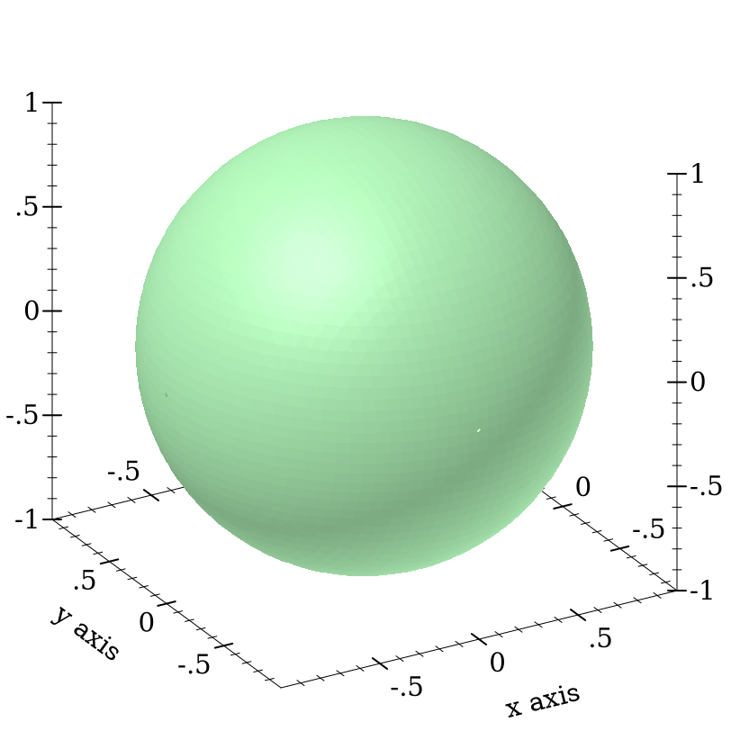
向 plot3d 传递小于 [-1..1] × [-1..1] × [-1..1] 的边界,会切断六个轴向的极点:
> (plot3d (polar3d (λ (θ ρ) 1) #:color 2 #:line-style 'transparent) #:x-min -0.8 #:x-max 0.8 #:y-min -0.8 #:y-max 0.8 #:z-min -0.8 #:z-max 0.8 #:altitude 25) 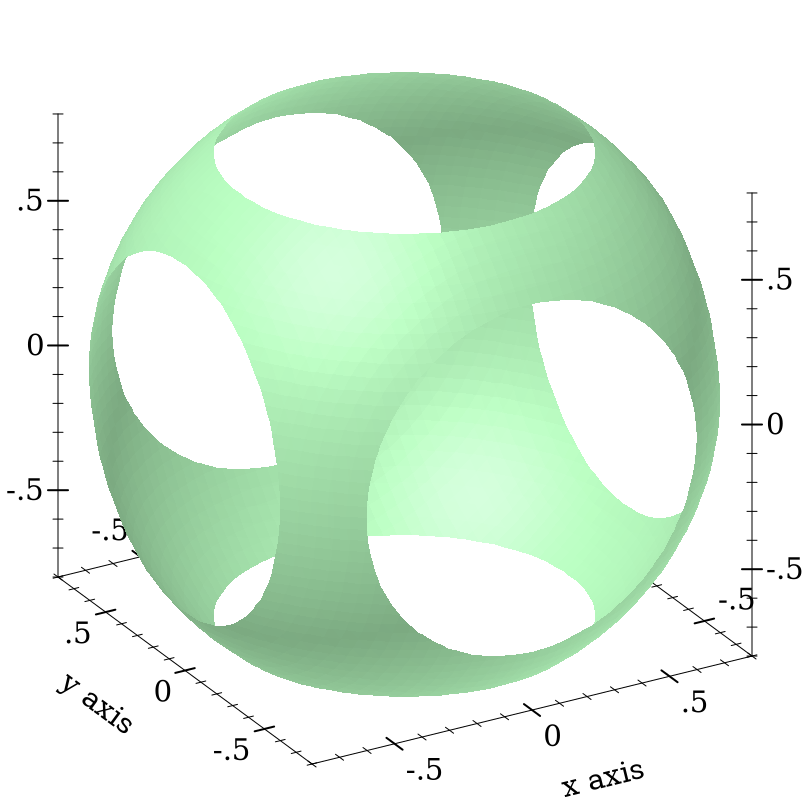
1.6 绘制多个三维渲染器
与渲染二维平面图不同,渲染三维平面图是与顺序无关的。 它们的组成形状(如多边形)被合并,按视图距离排序,并从后往前绘制。
> (define ((dist cx cy cz) x y z) (sqrt (+ (sqr (- x cx)) (sqr (- y cy)) (sqr (- z cz)))))
> (plot3d (list (isosurface3d (dist 1/4 -1/4 -1/4) 0.995 #:color 4 #:alpha 0.8 #:samples 21) (isosurface3d (dist -1/4 1/4 1/4) 0.995 #:color 6 #:alpha 0.8 #:samples 21)) #:x-min -1 #:x-max 1 #:y-min -1 #:y-max 1 #:z-min -1 #:z-max 1 #:altitude 25) 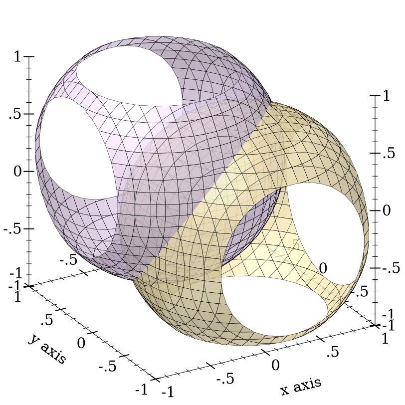
1.7 绘图到文件
任何绘图都可以通过 plot-file 和 plot3d-file 渲染成 PNG、PDF、PS 和 SVG 文件, 以纳入论文和其他出版媒体。
1.8 颜色与样式
在论文中,线条应使用深色、完全饱和的颜色,而区域和表面则使用浅色、不饱和的颜色。 论文通常是以黑白两色印刷的,坚持这一准则将有助于彩色绘图的黑白版本得到良好的效果。
为了便于操作,Plot 提供了遵循这些准则的编号颜色,这些颜色也是为高对比度的颜色而设计的。 当作为线条颜色使用时,数字被解释为深色、完全饱和的颜色。 当用作区域或表面颜色时,数字被解释为浅色、不饱和的颜色。
> (parameterize ([interval-line1-width 3] [interval-line2-width 3]) (plot (for/list ([i (in-range -7 13)]) (function-interval (λ (x) (* i 1.3)) (λ (x) (+ 1 (* i 1.3))) #:color i #:line1-color i #:line2-color i)) #:x-min -8 #:x-max 8)) 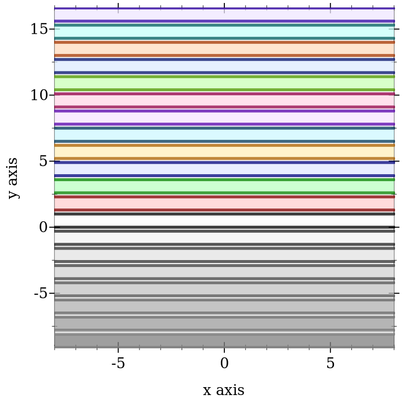
Color 0 对线条来说是黑色,对区域来说是白色。 Colors 1..120 是通过旋转色调和调整使相邻的颜色在视觉上更加不同而产生的。 Colors 121..127 是灰度的。
Colors -7..-1 也是灰度的,因为在 0 之前,颜色会重复。 也就是说, colors -128..-1 与 colors 0..127 是相同的。 127 之后的颜色也会重复。
如果论文将以黑白方式出版,则应使用样式以及颜色,或者用颜色代替。 有 5 种编号的钢笔样式和 7 种编号的画笔样式,它们也会重复。
> (parameterize ([line-color "black"] [interval-color "black"] [interval-line1-color "black"] [interval-line2-color "black"] [interval-line1-width 3] [interval-line2-width 3]) (plot (for/list ([i (in-range 7)]) (function-interval (λ (x) (* i 1.5)) (λ (x) (+ 1 (* i 1.5))) #:style i #:line1-style i #:line2-style i)) #:x-min -8 #:x-max 8)) 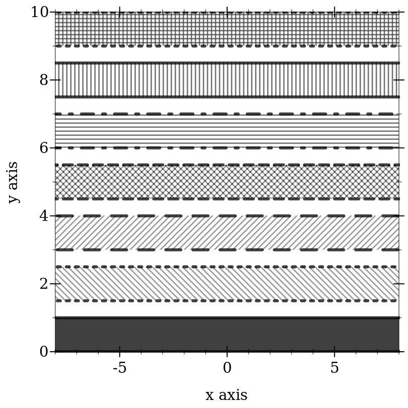